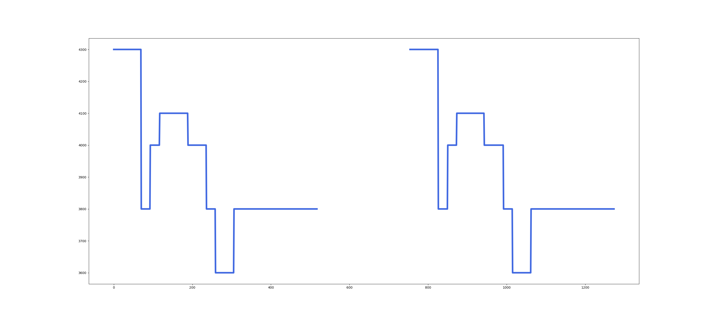
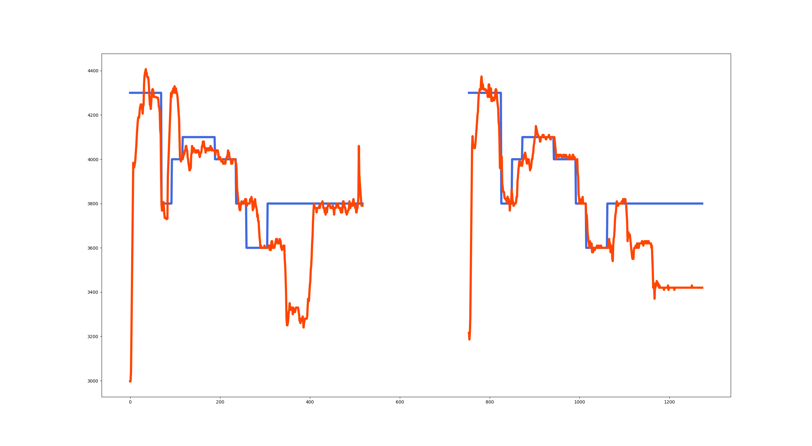
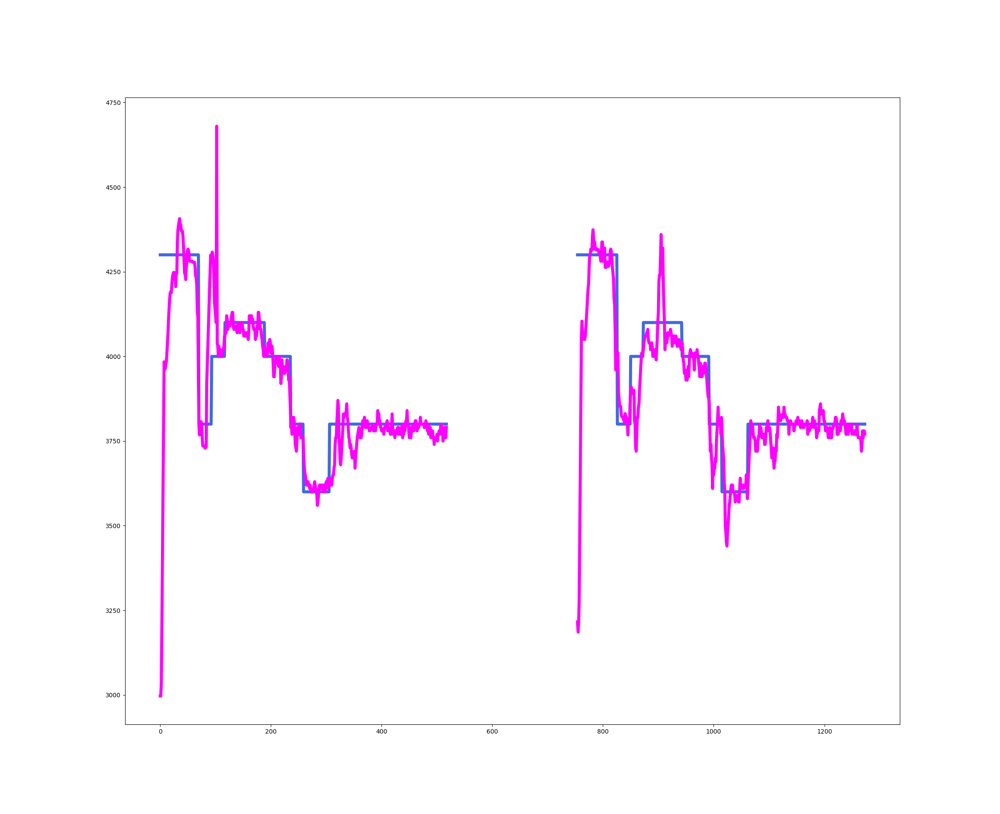
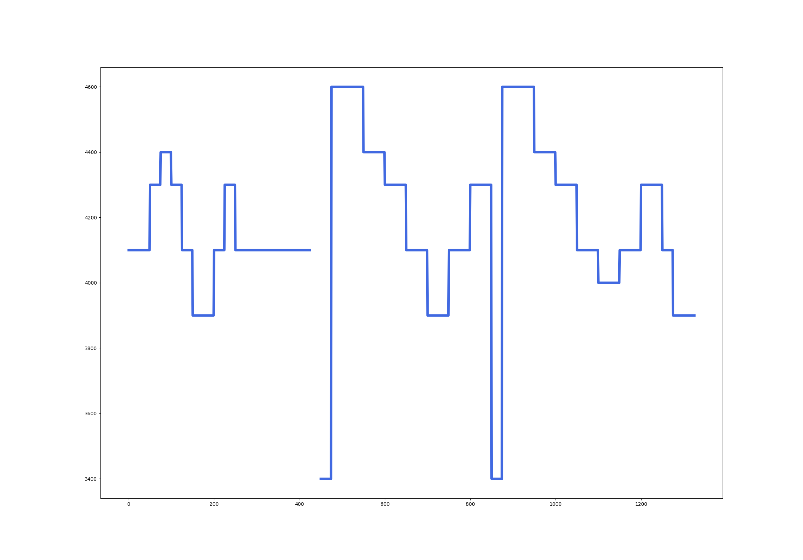
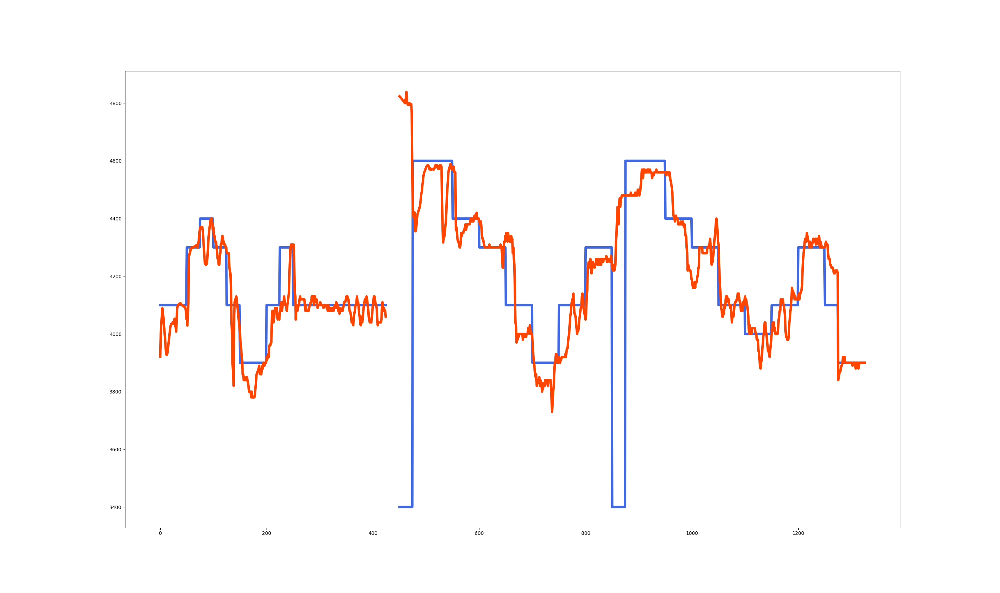
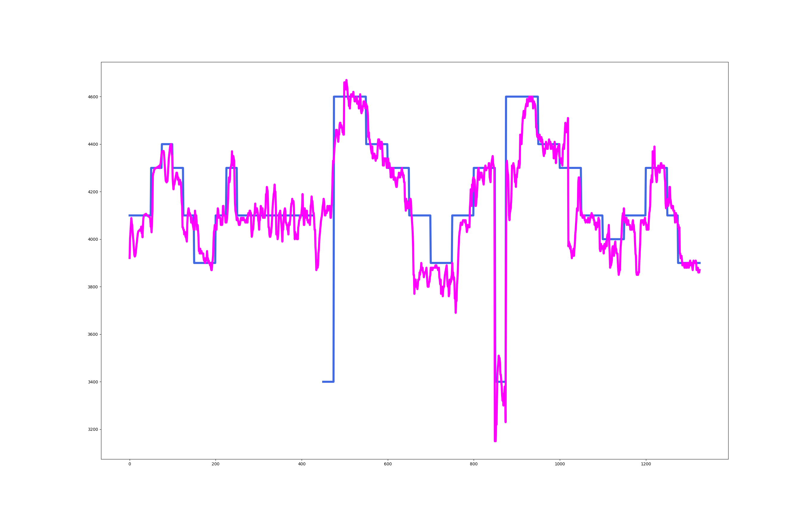

Abstract
This paper describes a method that can recursively generate a continuous F0 contour of a singing voice from a monophonic sequence of musical notes (musical score) by using a deep neural autoregressive model called WaveNet. Real F0 contours include complicated temporal and frequency fluctuations caused by singing expressions such as vibrato and portamento. Although hidden Markov models (HMMs) have often been used for explicitly representing the F0 dynamics, it is difficult to generate realistic F0 contours due to the poor representation capability of the HMMs. To overcome this limitation, WaveNet, which was invented for modeling raw waveforms in an unsupervised manner, was recently used for generating singing F0 contours from a musical score with lyrics in a supervised manner. Inspired by this attempt, we investigate the capability of WaveNet for generating singing F0 contours without using lyric information. Our method conditions WaveNet on pitch and contextual features of a musical score and minimizes the square error between target and output F0s on the log-frequency axis instead of using the cross-entropy loss. The experimental results showed that these techniques improved the quality of generated F0 contours.
You can get the latest version of our paper from here: [PDF]
Demo
Example results of singing F0 contours generated from musical note sequences based on original WaveNet and our method are shown below. The input musical note sequences are obtained from the annotation data of RWC popular music database [1, 2]. The input musical note sequences and the generated results based on original WaveNet and our method are plotted. The blue line corresponds to the input musical note sequences, the orange line to the generated results based on original WaveNet and the orange line to the generated results based on our method.
Example 1 (RWC-MDB-P-2001 No. 8)
Input musical note sequence
Original WaveNet
Our method

Example 2 (RWC-MDB-P-2001 No. 12)
Input musical note sequence
Original WaveNet
Our method
